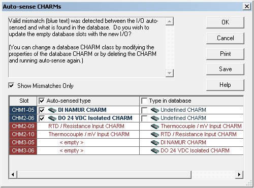

Commission a CIOC and autosense its CHARMs
A physically connected CIOC can be put into service by commissioning it to a CIOC placeholder in the DeltaV Explorer. Commissioning a CIOC synchronizes the CIOC placeholder configuration with the physical CIOC. When you commission a CIOC, you can also autosense its CHARMs. Autosensing automates the comparison between any physical CHARMs installed and the configured CHARMs under the CIOC placeholder and reconciles mismatches within the same CHARM class.
Drag a decommissioned CIOC from the Decommissioned Nodes container to its CIOC placeholder.
The system prompts you to autosense the CHARMs under the CIOC.
Note: If you expect to see a decommissioned CIOC in the Decommissioned Nodes container but it is not listed, it is possible that the CIOC was not properly decommissioned and is still in the commissioned state. It is recommended that you troubleshoot the CIOC to determine it's current state and then reset the CIOC if you find that it is still commissioned.Click Yes.
The Auto-sense CHARMs dialog opens.

The Auto-sense CHARMs dialog lists the autosensed CHARM types and the CHARM types that have been configured and downloaded to the database. To view a list of only the mismatched CHARM types, select the Show Mismatches Only option.
Mismatches that have been resolved by autosensing appear in blue, with the check box for the autosensed CHARM type selected, by default. Optionally, you can retain the CHARM type configuration in the database, by selecting its check box in the Type in database column. To retain all of the CHARM type configurations currently in the database, select the Type in database check box at the top of the column.
Mismatches that appear in red cannot be resolved by autosensing. This usually indicates one of the following conditions:
A mismatch between CHARM classes
No physical CHARM installed in the CIOC
To manually resolve mismatches of this sort generally requires either installing or replacing a CHARM in the CHARM Baseplate and/or reconfiguring the properties of the CHARM in the database.
You can autosense CHARMs anytime to recognize any hardware changes by selecting Auto-sense CHARMs from the CHARMs container.